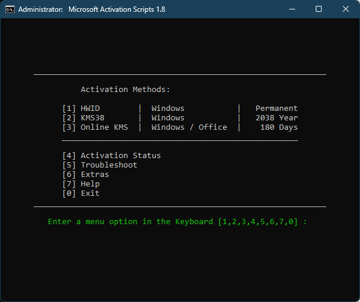
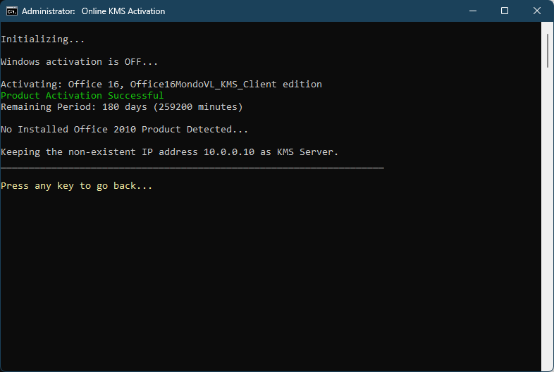

Cách đơn giản để active Windows / Office miễn phí
Do khum nhớ địa chỉ web của tác giả nên dùng địa chỉ web của mình
làm trung gian :D
Cám ơn massgrave.dev đã tạo nên công cụ tuyệt vời này
Cách 1:
Copy dòng lệnh dưới đây bỏ vào PowerShell hoặc Terminal
irm active.mhqb365.com/run | iex
Cách 2:
Tải script.bat về và Run as administrator
Lúc này hiện ra 1 cửa sổ cmd có những tùy chọn active, chọn chức
năng mình cần bằng phím số
Ví dụ muốn active cả Windows lẫn Office thì chọn số 3

Đợi thành quả thôi
